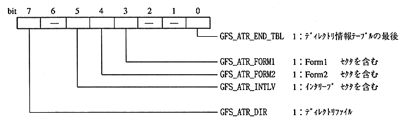

Title | Data | Data Name | No |

Title | Data | Data Name | No |
constant name | description |
|---|---|
GFS_NWSTAT_NOACT | doing nothing |
GFS_NWSTAT_FREAD | GFS_NwFread in progress |
GFS_NWSTAT_CDREAD | GFS_NwCdRead running |